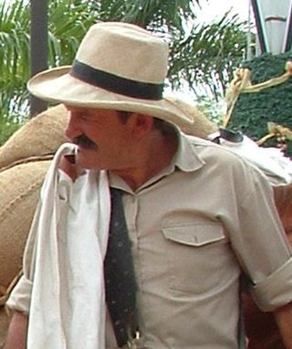

Juan Valdez es un personaje creado en 1959 para representar la dedicación de los más de 500.000 cafeteros colombianos y sus familias quienes han dedicado su vida al cuidado del grano.

Desde ese entonces, el personaje ha sido encarnado en tres hom bres quienes han llevado a diferentes países del mundo, la autenticidad y calidez de la cultura cafetera colombiana, así como el producto en sí, el café de Colombia. Su imagen representa el arquetipo de cafetero colombiano, en especial de la región cafetera por excelencia: el Eje Cafetero caracterizada por su cultura paisa de la cual se deriva la vestimenta tradicional que caracteriza a Juan Valdez con su carriel, su poncho, sus alpargatas y demás elementos del clásico arriero paisa.